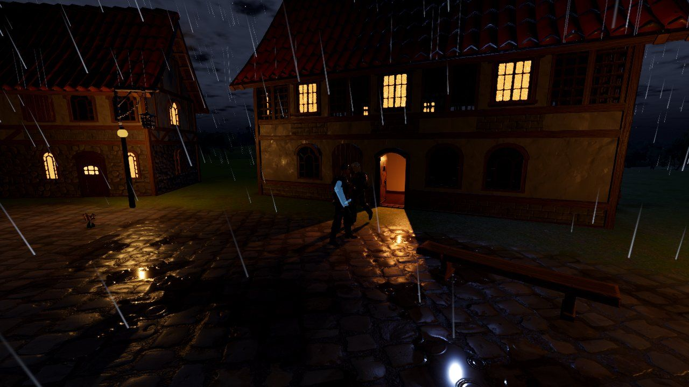

ALDERVAST
An island held together by broken light. Explore five regions, gather a party, and follow the main story from the Unlit Road down to the Undertow.
Aldervast is an online role-playing game set on an island of the same name. Long ago the Weavers bound the land together with the Lattice, a web of living light. In the Unweaving that web broke. The Cinder Fall burned the west into black glass, the dead began to walk as the Hollow, and the free towns that survived built the Lantern Compact from the ruins, lighting their lanterns with salvaged Lattice-light.
You wake on the road outside Harrowford with that light in your veins and no memory of the night before. From there the game is yours: a shared world with towns, quests, dungeons and battlegrounds, and a deep build game of skills, sockets, passives and loot underneath it.
Five regions, one road
Each region has its own weather, sounds, people and dangers, and the main story climbs through all of them.

Brightmeadow Vale
Rolling green hills, windmills and orchards. The heart of the Lantern Compact and the safest land left in Aldervast.

Thornwood
An ancient forest of giant trees, where the Vaelin keep their hollow courts and something old stirs in the roots.

Saltreach Coast
Windswept dunes, sea cliffs and drowned ruins. Gullhaven's harbor is the last free port on the western sea.

Cinderreach Wastes
Where the Cinder Fall struck. Black glass plains, smouldering fissures and the bones of Old Kaldris.

Frostspire Peaks
Knife-edged mountains crowned by Highwatch Keep. Above it, the Spire where the Sundered Crown fell.

The map
Rivers, roads, lakes, towns and every landmark, on the game's own map.
A world to share, a build to make your own
Aldervast mixes the structure of a classic online RPG (towns, quests, groups, dungeons and raids) with a loot-driven build game.

Dungeons and raids
Nine dungeons, a trial, two raids, timed Hourglass runs and three world bosses that wake in turn each hour. Boss rooms wake with their boss: a coffin lid slides off, a bell tolls, a forge vents steam.

Builds that grow with you
49 skill glyphs, 36 support runes and a 594-node passive web with a painted emblem on every node. Any class can use any skill; sockets and links decide what goes together.

Battlegrounds and duels
Five-a-side battles for hearthstones or relics, duels in the open world, and honour to spend at the Battlemaster.

Play together, or alone
Parties, guilds with halls and vaults, the post, trading, an auction house, a group finder and a dungeon queue with companions for empty places.

A life outside the fight
Ride a horse, escort a wagon, fish the sea and the lakes, enter the Saltreach Derby, cook what you catch, pick herbs, mine and smelt ore, and skin the beasts you hunt.

Look the way you like
Armour shows what you wear, and the Wardrobe lets you restyle any piece as a look you have already collected.
Weather, wind and the time of day
Clouds cast shadows as they pass. Rain soaks the ground and gathers in puddles; snow settles on the roofs of Highwatch; storms throw lightning that can set a tree alight. The light follows the hour: golden evenings, red sunsets and a blue twilight, with mist in the hollows and over still water at dawn. At dusk the shutters close and the windows light up, and the long grass bends aside as you walk through it.
Every place sounds like itself
Birdsong over the meadows, the smith's hammer in Harrowford, gulls over Gullhaven's harbour. These are recordings of the game's own sound mix.
From the game


In active development
Aldervast is being built one release at a time; the current release is 1.5.4. Builds are made for Windows and Linux, with dedicated servers for both. You can play on your own (Single Player runs the server inside the game, no connection needed), host a game for friends, or join a dedicated server. New players get a short guide in the game, and the wiki's Getting started page covers the same ground.
It is a work in progress, and some of it is rough. Screenshots on this site are taken in the game as it is built, at 1280×720, and will change as the work goes on. The release history lists what each version added.